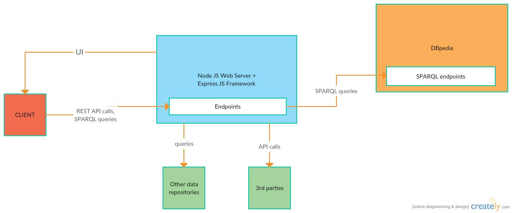

rouT
Abstract
rouT (Smart Tourist) is a multi-device travel application which helps tourists in creating their desired travel routes. Additionally, rouT enables the users to share their thoughts and experiences amongst themselves. Consequently, as more users interact with the rouT (Smart Tourist) app, the provided travel routes will be increasingly better.
Introduction
rouT (Smart Tourist) is a multi-device travel application which provides useful tourist-related information based on the users' needs. The rouT's application base inputs are the knowledge base (DBpedia), Google Places, Google Maps and, of course, its various users' needs. Each and every person using the rouT travel app can benefit from a suitable travel route tailored to their respective needs. For instance, a family might want a safe and smooth journey as opposed to a group of young students who are looking for crazy stuff to do.
The rouT (Smart Tourist) application provides support for automated translation and localization based on the user's current location. Moreover, the rouT app detects if the current user has already visited a certain tourist attraction and then it gives the user the chance to share her thoughts and experiences on Facebook. For example, the user can write a review about the places she had visited or even upload photos and videos showcasing her most recent travel experience.
Application Architecture
The service-oriented architecture for the rouT (Smart Tourist) travel application is described below.
The main public service of rouT is represented by the NodeJS Web Server and also by the Express JS framework. Most of the business logic will happen here and the end user will interact with this service via the rouT RESTful API. This API's top level resources are the Routes, Places, Reviews, Photos, Videos and Advices. The OpenAPI specification for the rouT (Smart Tourist) travel application can be found by clicking here .
When configuring the travel routes, the NodeJS Web Server will make use of the k-nearest neighbors (KNN) algorithm. By using this approach, the public service is able to provide the points of interest that are closest to the user at a certain point in time based on the user's current location. In addition, the client may specify a range in which the tourist attractions have to be located in because she may just want to visit some points of interest that are closest to her current location.
The public service will use data provided by other 3rd parties, such as Google Places and TripAdvisor in order to create the desired travel routes. Also, the main service will also execute SPARQL queries against the DBpedia knowledge base in order to gather even more travel-related data that it can further use when configuring the requested journeys for its users.
The rouT travel application has an additional service which is responsible for the syncing with various social networks. If the user has visited a certain tourist attraction, she may want to share her thoughts and experiences about her most recent experience and even give some advice to other potential visitors in the future. For instance, the user can perform several actions, such as uploading a photo or a video, writing a review or maybe give some advices to fellow travelers. The application keeps track of what the users have visited so that no fake reviews will be written by the users which may lead to incorrect data provided by the travel application.
Last but not least, the automated translation service will handle the translation of tourist-related information in a language which will be chosen by the user. The actual translation tasks will be delegated to a third party, as this will be an API specifically focused on this domain and thus it will provide better results rather than if we would have chosen to do the translation ourselves.
Main flow
The rouT (Smart Tourist) travel application's main flow is shown in the picture below. The interaction between the end user and the API provided by the application is highlighted in the diagram. 
To begin with, the end user will first make a call to the /route API of the main public service which is represented
by the NodeJS Web Server which will extract the user's GPS coordinates and therefore figure out her location. Next, the user
can customise her trip by choosing certain options regarding the trip's nature. If the chosen trip is the fastest one, then the
service will return the results provided by the Google Maps API for the fastest route. On the other hand, the user may customize
her trip in such a manner that the chosen options contradict themselves. For instance, the user may want a trip that is fast and
interesting at the same time, but the best course for the fast part of the criteria may be to take the main road (where the most interesting
tourist attractions may not be present). In this case, the main public service will configure the route based on the information extracted
from DBpedia and from the social networks. By analyzing all of these inputs carefully, the service will be able to provide a custom-tailored
route that will meet all of the user's needs.
A pop-up confirm dialog will be displayed to the user when a certain tourist attraction has been visited. Consequently, if the user says
that she has indeed visited that place, then she may want to share her thoughts on social networks. By doing so, the user will make a call
to the /actions API of the main public service. The specific actions which can be performed here are the uploading of photos,
videos, writing reviews and giving advices to fellow travellers.
When customising the journey, the user can also choose the language in which the various tourist-related information will be presented in. A dropdown list will be available to the user from which she can select the desired language. The translation service will delegate the translation task to a more specialized 3rd party application focused on this specific domain.
Conclusion
rouT (Smart Tourist) might prove to be a quite dependable travel application when it comes to planning a pleasant holiday. One interesting feature of rouT is the fact that better travel routes will be configured and provided as more and more users will interact with the application. Even though the information which can be found on DBpedia and Google Places can suffice as far as planning a trip goes, it is not tailored to satisfy everyone's needs. rouT also automatically translates various tourist attractions related information in a language chosen by the user. The rouT (Smart Tourist) travel application can be further improved by integrating it not only with the Facebook social network, but with others as well, such as Google+, Twitter and so on. Thus, the quality of the provided custom-tailored travel routes can be easily improved by just simply enlarging the application's data sets.